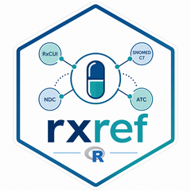

Get class-like RxClass assertions for RxNorm drugs
Source:R/classes.R
get_drug_classes.Rd![[Experimental]](figures/lifecycle-experimental.svg)
get_drug_classes() is an experimental convenience function that returns
RxClass assertions that are likely to behave like drug-class labels.
It combines selected assertions from ATC, ATCPROD, FDA/SPL EPC, VA, and SNOMED CT disposition relationships. It intentionally excludes relationship types that usually describe contraindications, indications, physiologic effects, chemical structures, or other non-class assertions.
For a more compact and ingredient-oriented output, rely on defaults for include_sources. For extended list of product-level sources, consider adding "ATCPROD" and "VA".
This function is experimental because "drug class" is not a single native
RxClass concept. Different sources use different classification logic, and
this helper applies an opinionated filter to return class-like assertions.
For source-specific results, use get_classes(), get_atc(), get_epc(),
get_va(), or related functions directly.
Arguments
- x
Character vector of RxCUIs or drug names.
- by
One of
"rxcui"or"name".- include_sources
Character vector of class-like sources to include. Defaults to
c("ATC", "ATCPROD", "EPC", "VA", "SNOMEDCT").- collapse
Logical; if
TRUE, returns one row per unique class assertion per input and source, dropping drug-specific columns. IfFALSE, returns the full source-specific rows, including matched RxCUI, drug name, and term type.- keep_input
Logical; if
TRUE, includes the original input value.